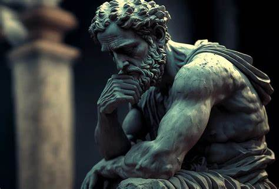
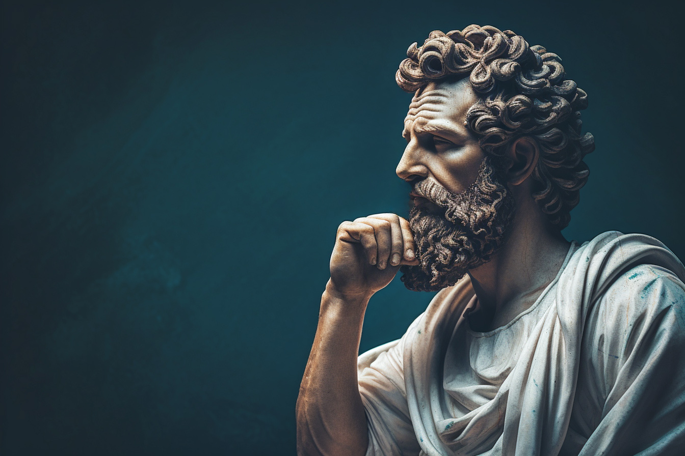
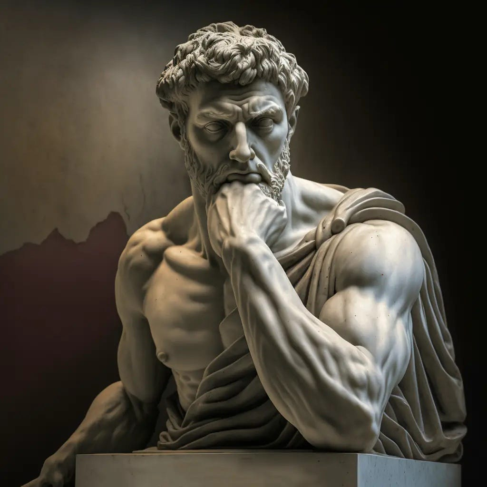

Was ist Stoizismus?
Einführung in den Stoizismus
Der Stoizismus ist eine antike Philosophie, die im 3. Jahrhundert v. Chr. von Zenon von Kition in Athen gegründet wurde. Sein Ziel ist es, ein erfülltes Leben durch Vernunft , emotionale Gelassenheit und Tugendhaftigkeit zu erreichen. Die Philosophie basiert auf drei Säulen, die eng miteinander verbunden sind:
Logik - Die Kraft der Rationalität
Die stoische Logik untersucht die rationalen Strukturen der Welt (den „Logos“) und lehrt, wie man klare, logische Argumente führt. Für die Stoiker ist die Welt ein vernünftiges System , das durch universelle Gesetze gesteuert wird. Wer diese Gesetze erkennt, kann objektiv denken und Irrtümern widerstehen.
- Zentralbegriff: Der Logos (griechisch für „Wort“ oder „Vernunft“) ist die göttliche Ordnung, die alle Dinge lenkt.
- Praxis: Die Logik hilft, Emotionen zu analysieren und zwischen rationalen Urteilen und irrationalen Reaktionen zu unterscheiden.
- Ziel: Ein rationales Leben zu führen, das auf Wissen und Einsicht basiert.
Physik - Die Welt als natürlicher Prozess
Die stoische Physik betrachtet die Welt als harmonisches Ganzes, das von Naturprinzipien oder göttlichen Gesetzen regiert wird. Alles, was geschieht, ist Teil eines größeren Plans, den wir akzeptieren müssen.
- Kernidee: „Lebe im Einklang mit der Natur“ - ein Prinzip, das bedeutet, sich an die Realität anzupassen, statt gegen sie zu kämpfen.
- Moderne Parallele: Dies erinnert an ökologisches Denken oder die Akzeptanz von Veränderung in der Achtsamkeitslehre.
Ethik - Das tugendhafte Leben
Die Ethik ist die praktischste Säule des Stoizismus. Sie zielt darauf ab, durch die vier Kardinaltugenden - Weisheit, Mut, Gerechtigkeit und Mäßigung - ein sinnvolles Leben zu führen:
- Weisheit: Die Fähigkeit, zwischen Gut und Böse zu unterscheiden.
- Mut: Standhaftigkeit in Krisen und Bereitschaft, für das Richtige einzustehen.
- Gerechtigkeit: Soziale Verantwortung und Respekt für andere.
- Mäßigung: Selbstkontrolle und Abstinenz von übermäßigem Verlangen.
- Zitat: „Tugend ist der einzige wahre Reichtum“ - Zenon von Kition.
Interessanter Hook:
Stoizismus lehrt, dass unser Leiden nicht von äußeren Ereignissen kommt, sondern von unseren Meinungen darüber. Deshalb gilt: Konzentriere dich auf das, was du kontrollieren kannst - deine Gedanken, Emotionen und Handlungen - und akzeptiere, was du nicht ändern kannst.
- Beispiel: Ein Stoiker würde sich nicht über einen Regentag ärgern, sondern einen Schirm nehmen - und vielleicht die Ruhe genießen.